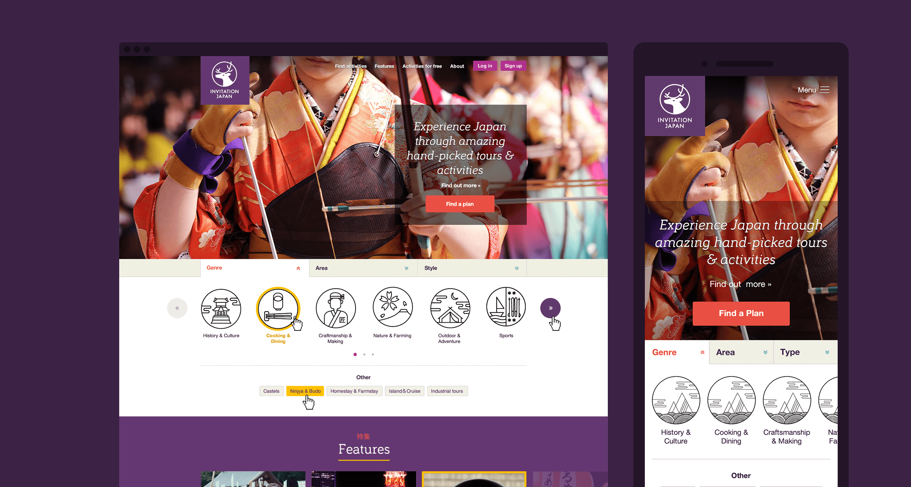
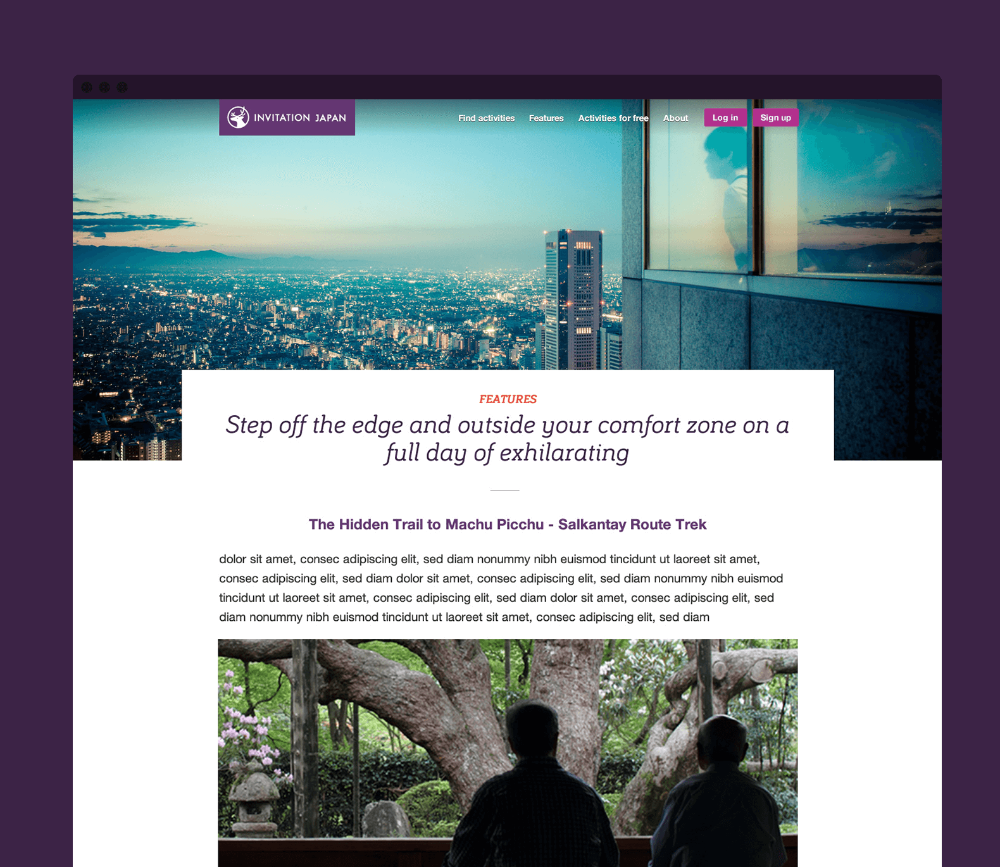
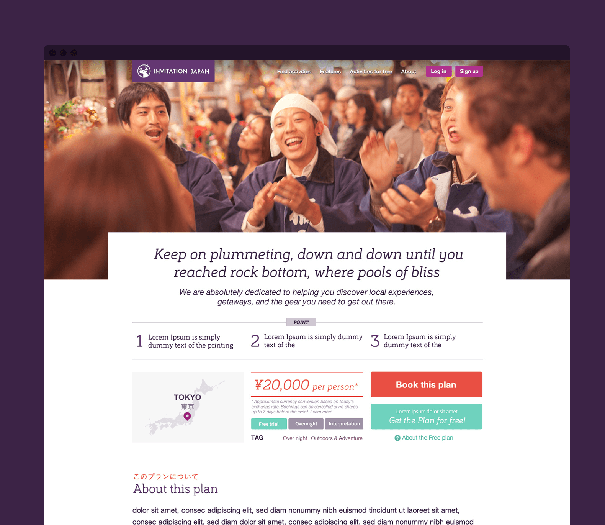
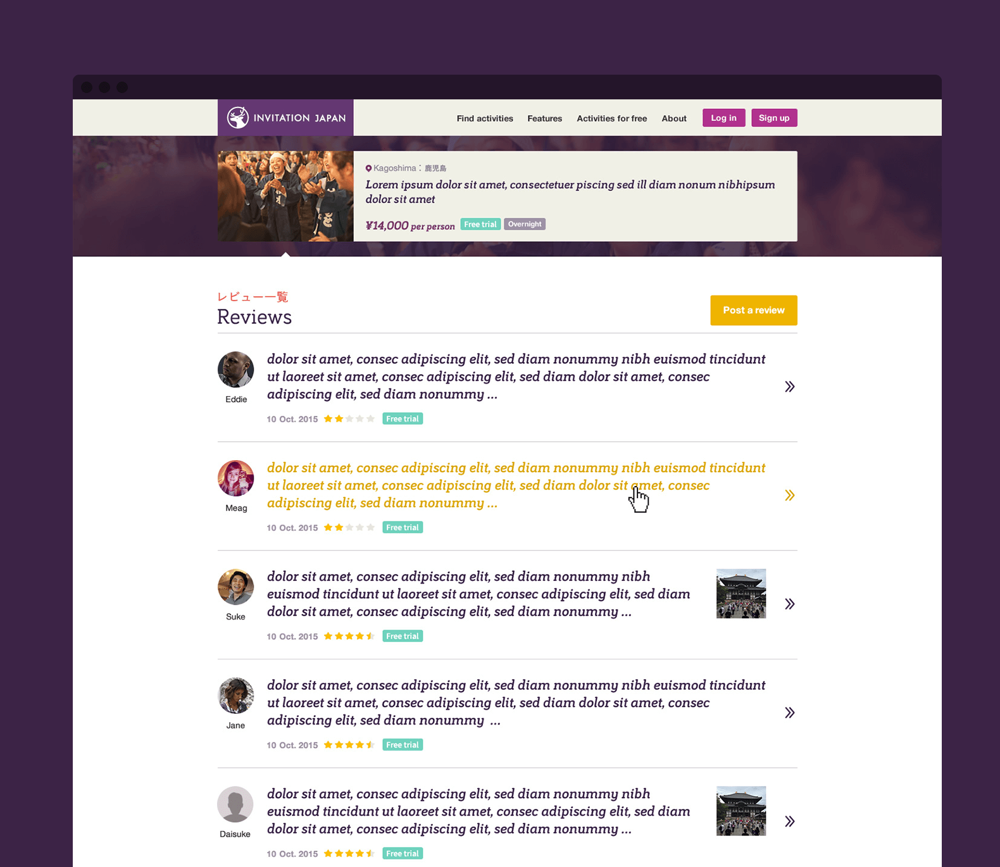

INVITATION JAPAN
2016
UI Design
2016
UI Design
印象をかたちにする
インバウンド向けのツアーガイドサイトのUIデザインを担当しました。ディープな日本文化を体感したいと考えている中級者から上級者に絞った体験紹介サービス。全国各地に精通したスタッフが体験を企画し紹介していくサイトです。サイトデザインは日本人が描く純和風のトーンではなく、あえて海外旅行者が描く少し誇張しつつも上質なトーンを狙いました。日本の文化は世界でも知られていますが、まだまだミステリアスなイメージを持たれるため期待度が旅行者の間では高いそうです。その期待感をサイトでも反映することで、実際の体験までの切れ目ない流れを作ることができると考えました。参考は、海外で発行されている日本の旅行ガイドブックです。

トップページ

体験プラン特集ページ - 複数のプランを特集として紹介

体験プラン詳細ページ - 詳しいプラン内容を紹介

体験プランレビューページ